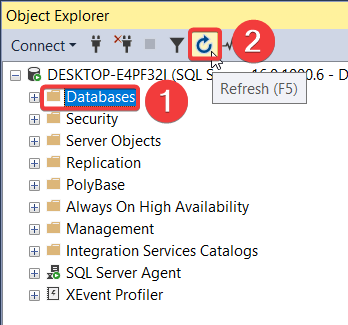

Dupa cum am discutat la lectia anterioara, vom folos instrumentul SQL Server Management Studio pentru a crea, manipula, modificare si pentru a face diferite operatii asupra unei baze de date.
Pentru inceput ne conectam la serverul local. SQL Server Management Studio automat va detecta numele serverului, in cazul dat, serverul va fi computerul nostru. Pentru a crea o baza de date urmariti pasii de mai jos:
"USE" este un cuvânt cheie în SQL Server care este utilizat pentru a specifica baza de date pe care doriți să o utilizați pentru a executa o interogare sau o comandă.
Sintaxa este următoarea:
USE nume_baza_de_date
De exemplu, dacă doriți să utilizați baza de date "AngajatiDB", comanda "USE" ar arăta astfel:
USE AngajatiDB
După ce ați specificat baza de date cu ajutorul comenzii "USE", toate comenzile ulterioare care sunt executate în acelasi editor de interogare se vor executa în contextul acelei baze de date.
Pentru a crea o tabelă într-o bază de date, puteți folosi sintaxa următoare în SQL Server:
CREATE TABLE nume_tabel (
coloana1 tip_data constrangeri,
coloana2 tip_data constrangeri,
...,
coloanaN tip_data constrangeri
);
În acest exemplu, trebuie să specificați numele tabelei, coloanele și tipurile lor de date, precum și orice constrângeri pentru fiecare coloană.
Tipul de date specifică tipul de date pe care îl va stoca coloana, cum ar fi "int" pentru un număr întreg, "varchar" pentru un șir de caractere cu lungime variabilă, "date" pentru o dată, și așa mai departe.
Constrângerile pot fi de diferite tipuri, cum ar fi "NOT NULL" pentru a impune ca o coloană să nu fie nulă, "PRIMARY KEY" pentru a declara o coloană drept cheie primară a tabelului și așa mai departe.
De exemplu, dacă doriți să creați o tabelă numită "clienti" cu două coloane: "id_client" și "nume_client", comanda ar arăta astfel:
CREATE TABLE clienti (
id_client int PRIMARY KEY,
nume_client varchar(50) NOT NULL
);
Aceasta va crea o nouă tabelă numită "clienti" cu două coloane: "id_client" și "nume_client". Coloana "id_client" este o cheie primară și este de tip întreg, iar coloana "nume_client" este un șir de caractere cu o lungime maximă de 50 de caractere și nu poate fi nulă.
SQL Server oferă o gamă largă de tipuri de date pentru a stoca diferite tipuri de date, cum ar fi numere întregi, valori zecimale, șiruri de caractere, date și ore, valori booleane etc. Iată câteva dintre cele mai comune tipuri de date utilizate în SQL Server:
În SQL Server, legăturile între tabele sunt create prin intermediul cheilor primare și cheilor externe.
În SQL Server, o cheie primară (sau cheie principală) este o coloană sau un set de coloane care identifică în mod unic fiecare înregistrare dintr-o tabelă. Aceasta este o cheie unică pentru o tabelă și este folosită pentru a garanta integritatea datelor.
Cheia primară poate fi definită la crearea tabelului sau prin modificarea structurii tabelului existent. Este important să se mențină integritatea cheii primare prin restricționarea valorilor duplicate și prin asigurarea că nu este posibil să se introducă valori nule în coloana sau setul de coloane care formează cheia primară.
Iată un exemplu de creare a unei chei primare în SQL Server:
CREATE TABLE Tabela1 (
ID INT PRIMARY KEY,
Nume VARCHAR(50)
);
În acest exemplu, coloana ID este definită ca cheie primară a tabelului Tabela1. Aceasta înseamnă că fiecare înregistrare din tabel va avea o valoare unică în coloana ID. Orice încercare de a introduce o valoare duplicată în coloana ID va returna o eroare
În SQL Server, o cheie străină este o coloană sau un set de coloane dintr-o tabelă, care referă o coloană sau un set de coloane dintr-o altă tabelă. Aceasta înseamnă că valorile din coloana cheii străine trebuie să corespundă cu valorile din coloana cheii primare din tabela referențiată.
De exemplu, să presupunem că avem două tabele: Tabela1 și Tabela2, în care Tabela2 conține o referință către Tabela1 prin intermediul unei chei străine. Pentru a crea o cheie străină între cele două tabele, trebuie să adăugăm o constrângere de cheie străină la tabela Tabela2:
CREATE TABLE Tabela1 (
ID INT PRIMARY KEY,
Nume VARCHAR(50)
);
CREATE TABLE Tabela2 (
ID INT PRIMARY KEY,
Data DATE,
Tabela1_ID INT FOREIGN KEY REFERENCES Tabela1(ID)
);
În acest exemplu, cheia străină este creată pe coloana Tabela1_ID din Tabela2 și se referă la coloana ID din Tabela1. Aceasta asigură că fiecare valoare din coloana Tabela1_ID din Tabela2 este validă și se referă la o valoare existentă din coloana ID din Tabela1.
Atentie! - Cand facem legatura intre 2 sau mai multe tabele, mai intai se creaza tabele de la care vom lua cheile primare (adica tabelele parinte) iar mai apoi se creaza tabelele care contin cheile straina (adica tabelele copii).
În SQL Server, se poate șterge un tabel cu ajutorul instrucțiunii DROP TABLE. Această instrucțiune va elimina întregul tabel și toate datele aferente.
DROP TABLE nume_tabel;
În acest exemplu, "nume_tabel" este numele tabelului pe care dorim să îl ștergem.
Este important să rețineți că această instrucțiune va elimina permanent toate datele și structura tabelului, deci ar trebui utilizată cu precauție și numai dacă sunteți sigur că doriți să ștergeți tabela. De asemenea, trebuie să fiți atenți la faptul că dacă există constrângeri de cheie străină sau alte obiecte care depind de tabela respectivă, acestea trebuie eliminate înainte de a putea șterge tabela.